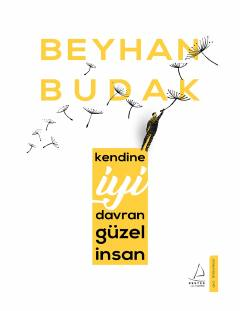

KİO'zingizni sevish va ruhiy muvozanatni saqlash bo'yicha amaliy psixologik qo'llanma.
Ushbu kitob insonning o'ziga yaxshi munosabatda bo'lishi, ruhiy salomatligini saqlashi va kundalik hayotdagi qiyinchiliklarni yengishga doir amaliy psixologik maslahatlarni taqdim etadi. Muallif Beyhan Budak o'zining shifokorlik va psixoterapiya tajribasiga tayanib, o'quvchilarga o'zini kashf etish va ichki xotirjamlikka erishish yo'llarini ko'rsatib beradi. Asar mashhur psixologik yondashuvlar va hayotiy misollar asosida yozilgan.